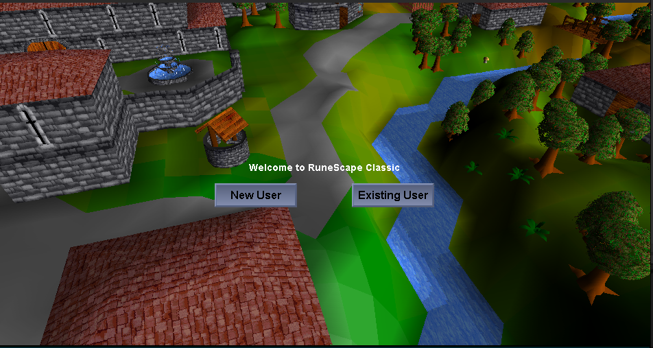
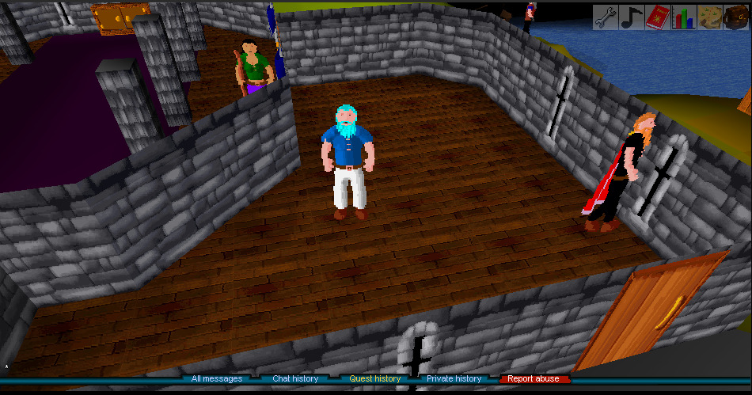
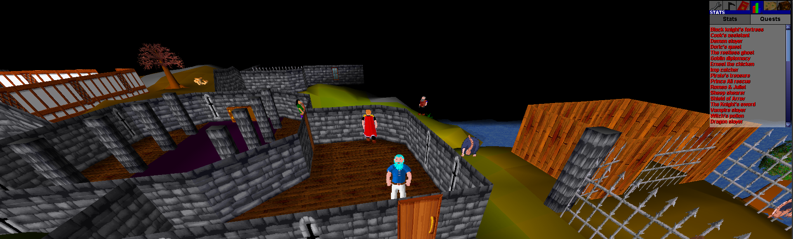

No servers. No setup. Just pure solo RuneScape Classic gameplay—preserved and reimagined.
Download Latest Release

Features
Core
- 100% single-process design (no external DB/server setup)
- All core content including all 50 quests
- Batched skill actions on select skills (configurable logic per skill/tool)
- Fully fixed UI with window resizing support
- Dynamic login screen
- Multi-account capable
- Account creation note: click “New Account” and uncheck Hardcore to avoid unintended save deletion
Quality of Life
- Bank accessible anywhere via
::bank - Teleport utility via
::tele <area> - Item swapping in bank via right-click
- Cross-platform save handling (Java 8+)
- Flexible experience modifier (1x–50x)
- Hardcore mode: save deletion on death
Recent Shop Update
- Bob’s Axes now stocks only woodcutting hatchets: Bronze, Iron, Steel, Rune
- Pickaxes available: Bronze through Rune
- Battle axes intentionally excluded from inventory
Screenshots


